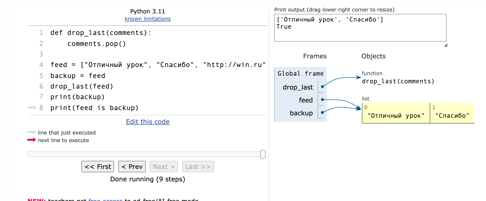
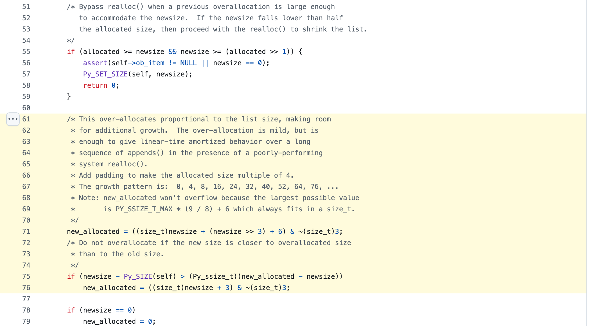

Занятие 7 · раздел 2 · массивы, строки и последовательные техники
Массив:
индексы, проходы,
границы
Как список Python хранит элементы в памяти, где проходят границы среза, как изменить список на месте и почему append в среднем стоит O(1). Три задачи на один проход с инвариантом: максимальная серия, разворот участка, удаление на месте.
план пары
- 1–2массив в памяти и границы
- 3инвариант прохода: серия
- 4–5разворот, копия или на месте
- 6удаление на месте
- 7ёмкость и амортизация
- 8практика и сдача
Баг-репорт · модерация комментариев
Спам удалили, но один остался
В ленте четыре комментария, в двух есть ссылка. Ниже две версии чистки, которые часто пишут первыми, и их настоящий вывод на Python 3.12. Первая версия молча оставляет спам, вторая падает.
def is_spam(text): return "http" in text comments = ["Отличный урок", "http://win.ru", "http://prize.ru", "Спасибо"] for text in comments: if is_spam(text): comments.remove(text) print(comments)
['Отличный урок', 'http://prize.ru', 'Спасибо']comments = ["Отличный урок", "http://win.ru", "http://prize.ru", "Спасибо"] for i in range(len(comments)): if is_spam(comments[i]): del comments[i] print(comments)
Traceback (most recent call last): File "moderation_v2.py", line 6, in <module> if is_spam(comments[i]): ~~~~~~~~^^^ IndexError: list index out of range
Причина у обеих ошибок одна: список меняется во время прохода по нему, а позиция прохода этого не учитывает. Разбор — в части 6, когда будут введены индекс, граница и инвариант прохода.
Структура занятия · 8 частей · 90 минут
От ячейки памяти к трём задачам
Непрерывный блок, адрес по индексу, что падает и что нет.
экраны 5–7Полуинтервал [l, r), разрезы, забор и столбы, ошибки на единицу, пустой вход.
экраны 8–13Задача 1 «максимальная серия» и ошибка потерянной последней серии.
экраны 14–19Задача 2 «разворот участка» и условие остановки.
экраны 20–24Ссылки на один список, контракт функции, выбор по памяти и риску.
экраны 25–27Разбор баг-репорта, указатели чтения и записи, цена четырёх способов.
экраны 28–34Размер и ёмкость, исходник CPython, амортизированная стоимость.
экраны 35–40lesson_07, ручная таблица, карточка изменения, справка, итог.
экраны 41–49Результат пары · что сдаётся
Папка portfolio/lesson_07
| Файл | Что в нём |
|---|---|
solution.py | три функции: max_streak, reverse_segment, remove_spam; обязательны первая и третья |
tests.py | 27 публичных тестов и ваши тесты: один воспроизводит найденную ошибку, три — по карточке изменения |
complexity_note.md | инвариант, время и память каждой функции своими словами |
initial_attempt.txt | вопросы к условию и три примера, записанные до кода |
python -m pytest tests.py. Публичные тесты проходят, граничный сценарий воспроизведён отдельным тестом. Вы объясняете ключевой инвариант и сложность по времени и памяти.Часть 1 · массив в памяти
Массив: ячейки одного размера подряд
Список Python устроен как массив, но в ячейках лежат не сами числа или строки, а ссылки на объекты. На 64-битной системе ссылка занимает 8 байт. Поэтому в одном списке могут лежать объекты разных типов и размеров, а ячейки при этом одинаковые. Ниже шаги трекера за пять дней; нажмите на ячейку.
Адреса условные: настоящее начало блока каждый запуск разное. Под ячейкой — индекс слева направо и отрицательный индекс справа налево.
Часть 1 · цена доступа
Доступ по индексу за O(1), поиск по значению за O(n)
Адрес ячейки вычисляется формулой: адрес(i) = начало + i × 8. Это одно умножение и одно сложение, и их число не зависит от длины списка. Для поиска по значению формулы нет: чтобы узнать, есть ли в списке 10 500, элементы просматриваются по порядку.
| Операция | Что выполняется | Время |
|---|---|---|
steps[3] | адрес по формуле, чтение одной ячейки | O(1) |
steps[-1] | индекс −1 заменяется на len(steps) − 1, дальше как выше | O(1) |
steps[3] = 9000 | запись ссылки в одну ячейку | O(1) |
len(steps) | длина хранится в объекте списка, считать её заново не нужно | O(1) |
10500 in steps | сравнение с каждым элементом, пока не найдено совпадение | O(n) |
steps.index(10500) | тот же просмотр, возвращает позицию первого совпадения | O(n) |
На этом различии построены решения раздела: алгоритм обращается к элементам по индексу, а поиск по значению внутри цикла не используется.
Часть 1 · индексы в Python
Индекс за границей падает, срез за границей — нет
>>> a = [10, 20, 30, 40, 50] >>> a[4], a[-1] (50, 50) >>> a[5] Traceback (most recent call last): File "<stdin>", line 1, in <module> IndexError: list index out of range >>> a[1:3], a[3:10], a[10:20] ([20, 30], [40, 50], []) >>> max([]) Traceback (most recent call last): File "<stdin>", line 1, in <module> ValueError: max() iterable argument is empty
a[-k] — то же, что a[len(a) - k]. a[-1] — последний элемент, a[-len(a)] — первый.-len(a) до len(a) - 1. Остальные поднимают IndexError.[0, len(a)], исключения нет. a[3:10] вернул два элемента вместо семи без сообщения. Ошибку границы в срезе находят только тестом.Часть 2 · границы
Полуинтервал [l, r): левая граница входит, правая нет
a[l:r] берёт элементы с индексами l, l + 1, …, r − 1. Такой участок называют полуинтервалом и записывают [l, r): квадратная скобка — граница включена, круглая — нет. По тому же правилу работает range(l, r).Число элементов равно разности границ. При включённой правой границе пришлось бы помнить про r − l + 1, и это частый источник ошибки.
a[2:5] → 3 элемента range(0, n) → n чисел
Граница k закрывает первый участок и открывает второй. Элемент a[k] попадает ровно в одну часть, пропусков и повторов нет.
a[:3] + a[3:] a[:l] + a[l:r] + a[r:]
При l == r участок пустой, и отдельный if для этого случая не нужен: цикл for i in range(k, k) не выполнится ни разу.
a[3:3] → [] range(5, 5) → пусто
Часть 2 · демонстрация · границы среза
Граница стоит между ячейками
Индекс границы — номер промежутка между ячейками. Граница 0 стоит перед первым элементом, граница n — после последнего. Нажмите на две границы: первая станет l, вторая r.
Часть 2 · подсчёт итераций
n элементов, n + 1 границ, n − 1 пар соседей
Забор из четырёх пролётов стоит на пяти столбах. В списке то же соотношение: элементов n, границ между ними и по краям n + 1, пар соседних элементов n − 1. Прежде чем писать range, определите, что именно перебирает цикл.
| Что перебираем | Сколько при n = 4 | Цикл | Где встречается |
|---|---|---|---|
элементы a[i] | n = 4 | for i in range(n) | сумма, счётчик, серия |
| границы, места для вставки | n + 1 = 5 | for k in range(n + 1) | разрез на a[:k] и a[k:], префиксные суммы |
пары соседей a[i], a[i + 1] | n − 1 = 3 | for i in range(n - 1) | рост цены по дням, проверка порядка |
| отрезки длины k подряд | n − k + 1 | for i in range(n - k + 1) | окно фиксированного размера (занятие 9) |
Часть 2 · термины условия
Подмассив, подпоследовательность, подстрока
Эти слова в условии меняют задачу целиком. «Самый длинный подмассив» и «самая длинная подпоследовательность» решаются разными алгоритмами, поэтому термин уточняется до кода.
Записывается срезом a[l:r]. У списка длины n непустых подмассивов n(n + 1) / 2 — для n = 5 это 15.
a = [3, 8, 1, 9, 4] [8, 1, 9] подмассив [3, 1, 4] не подмассив
Порядок сохраняется, но соседство — нет. Всего подпоследовательностей 2ⁿ, включая пустую: для n = 5 это 32.
a = [3, 8, 1, 9, 4] [3, 1, 4] подпоследовательность [1, 3] порядок нарушен
Символы подряд. Проверяется оператором in для строк: "паси" in "спасибо" даёт True.
s = "спасибо" "паси" подстрока "спб" подпоследовательность
Часть 2 · off-by-one
Пять ошибок на единицу
Off-by-one — ошибка, при которой цикл или срез проходит на один элемент больше или меньше нужного. Код при этом часто работает на обычных примерах и ломается на крайнем элементе.
| Код | Что происходит | Исправление |
|---|---|---|
for i in range(len(a)): if a[i + 1] > a[i]: | на последнем i индекс i + 1 равен len(a) → IndexError | пар соседей n − 1: range(len(a) - 1) |
for i in range(1, len(a)): total += a[i] | первый элемент не учтён, ошибки нет, ответ меньше верного | range(len(a)) или for x in a |
«с l по r включительно» → a[l:r] | элемент a[r] потерян | a[l:r + 1] |
for i in range(len(a) - k): sum(a[i:i + k]) | последнее окно не просмотрено | окон n − k + 1: range(len(a) - k + 1) |
last = a[len(a)] | индекс len(a) — граница после последнего элемента → IndexError | a[len(a) - 1] или a[-1] |
Проверка без запуска: подставьте n = 0, 1 и 2 и посчитайте итерации вручную. Если при n = 1 цикл по парам выполняется один раз, граница неверна.
Часть 2 · пустой вход
Что делает код на [] и на одном элементе
| Выражение | a = [] | a = [7] | a = [7, 7] |
|---|---|---|---|
a[0] | IndexError | 7 | 7 |
a[-1] | IndexError | 7 | 7 |
max(a) | ValueError | 7 | 7 |
range(len(a) - 1) | range(−1): пусто | range(0): пусто | одна итерация |
a[1:] | [] | [] | [7] |
for x in a | ни одной итерации | одна | две |
None или исключение. В задаче 1 ответ на [] — 0, в задаче 2 — ValueError.if not a не нужна. Она нужна, когда код до цикла читает a[0] или вызывает max(a).Часть 3 · инвариант прохода · возврат к занятию 5
Что хранится между итерациями
На занятии 5 инвариант цикла проверялся на готовом коде ручным прогоном. Здесь порядок обратный: сначала формулируется инвариант, по нему пишется код прохода.
Инвариант верен до первой итерации. Отсюда берутся начальные значения: best = 0, w = 0, i, j = l, r.
Если инвариант верен перед шагом, он верен и после шага. Отсюда тело цикла и порядок обновлений: что меняется до сдвига границы, что после.
Когда цикл закончился, инвариант вместе с условием остановки даёт ответ. Если ответ из него не следует, код после цикла что-то досчитывает.
По КТП хороший ответ звучит так: «вот что хранится между итерациями, и вот почему ни один кандидат не пропущен». Антипример — указатели двигаются по ощущению, а крайние случаи добавляются отдельными if после каждой найденной ошибки.
Часть 3 · задача 1 · фитнес-трекер
Максимальная серия дней с целью по шагам
Трекер хранит число шагов по дням: steps[0] — первый день, steps[-1] — последний. Цель дня — goal шагов, по умолчанию 10 000. Нужно вернуть длину самой длинной серии дней подряд, в каждый из которых цель достигнута.
| steps | Ответ |
|---|---|
[12000, 3000, 11000, 10500, 10000] | 3 |
[9999] | 0 |
[] | 0 |
| Вопрос к условию | Ответ |
|---|---|
| Ровно 10 000 шагов — цель достигнута? | да, сравнение >= |
| Что вернуть на пустом списке? | 0 |
| Бывают ли пропущенные дни? | нет, один элемент — один день |
| Можно ли менять список? | нет; память O(1) |
Термин из условия: серия — подмассив, то есть дни подряд. Если бы спрашивали о днях с пропусками, это была бы другая задача.
Часть 3 · задача 1 · решение
Две переменные: текущая серия и лучшая
def max_streak(steps, goal=10_000): best = 0 # лучшая серия среди steps[0..i] cur = 0 # серия, которая заканчивается на i for s in steps: if s >= goal: cur += 1 if cur > best: best = cur else: cur = 0 return best
i: cur — длина серии, которая заканчивается на дне i; best — длина лучшей серии среди дней 0..i.| Инициализация | дней не просмотрено, серий нет: cur = best = 0 |
| Сохранение | цель достигнута — серия продлевается на 1, и лучшая обновляется сразу; не достигнута — серия, оканчивающаяся на этом дне, пустая |
| Завершение | просмотрены все дни, по инварианту best — лучшая серия среди всех. Досчитывать после цикла нечего |
Часть 3 · демонстрация · проход по дням
Серия растёт, обрывается, best хранит максимум
Часть 3 · типичная ошибка · обновление не в том месте
best обновляется только при обрыве серии
for s in steps: if s >= goal: cur += 1 else: best = max(best, cur) cur = 0 return best
Код проходит примеры, где за лучшей серией идёт день без цели. Если серия заканчивается вместе со списком, ветка else для неё не выполнится. Частая «заплатка» — return max(best, cur) после цикла: она работает, но инвариант при этом остаётся нарушенным внутри цикла.
Часть 3 · задача 1 · тесты
Один тест — один класс входа
Публичные тесты из tests.py. Имя теста называет класс входа: при падении по имени понятно, какое допущение нарушено.
| Тест | Вход | Ждём | Что проверяет |
|---|---|---|---|
test_streak_empty | [] | 0 | пустой вход без отдельного if |
test_streak_single_day_missed | [9999] | 0 | один элемент, цель не достигнута |
test_streak_goal_is_inclusive | [10000, 10000, 9999, 10000] | 2 | сравнение >= на границе цели |
test_streak_all_days_reached | четыре дня выше цели | 4 | обрывов нет ни одного |
test_streak_best_series_at_the_end | [12000, 3000, 11000, 10500, 10000] | 3 | серия заканчивается вместе со списком |
test_streak_best_series_in_the_middle | лучшая серия внутри | 3 | серия после обрыва начинается с нуля |
test_streak_does_not_change_input | [12000, 3000, 11000] | список тот же | вход не изменён |
Часть 4 · задача 2 · плейлист
Разворот участка с l по r включительно
В плейлисте нужно развернуть порядок треков с позиции l по позицию r. Остальные треки остаются на местах. Функция меняет переданный список и ничего не возвращает.
| До | l, r | После |
|---|---|---|
A B C D E F | 1, 4 | A E D C B F |
A B C | 1, 1 | A B C |
1 2 3 4 | 0, 3 | 4 3 2 1 |
1 2 3 | 2, 1 | ValueError |
| Вопрос к условию | Ответ |
|---|---|
| Правая граница включена? | да; срезом это был бы a[l:r + 1] |
Что при l > r или выходе за список? | ValueError, список не меняется |
Что при l == r? | участок из одного трека, ничего не меняется |
| Вернуть новый список или изменить этот? | изменить этот, вернуть None |
Часть 4 · задача 2 · решение
Два указателя идут навстречу и меняют треки местами
def reverse_segment(tracks, l, r): if not (0 <= l <= r < len(tracks)): raise ValueError("неверные границы") i, j = l, r while i < j: tracks[i], tracks[j] = tracks[j], tracks[i] i += 1 j -= 1
tracks[i..j], уже стоит на итоговом месте. Внутри [i..j] — необработанная середина участка.| Инициализация | i = l, j = r: снаружи только треки вне участка, их разворот не касается |
| Сохранение | обмен ставит tracks[i] и tracks[j] на итоговые места, затем обе границы сдвигаются внутрь |
| Завершение | i ≥ j: в середине ноль или один трек, а один трек стоит на своём месте в любом случае |
Проверка границ стоит до цикла, поэтому при неверных l, r список не меняется. Число обменов — (r − l + 1) // 2.
Часть 4 · демонстрация · разворот tracks[1..6]
Обработанная зона растёт с двух сторон
Часть 4 · условие остановки
Почему i < j: указатели встречаются или перескакивают
При нечётной длине участка указатели встречаются на среднем элементе. При чётной — перескакивают друг через друга, и условие i != j тогда не срабатывает.
| Участок из 5 треков, l = 0, r = 4 | |||
|---|---|---|---|
| Шаг | i | j | i < j |
| до цикла | 0 | 4 | да |
| 1 | 1 | 3 | да |
| 2 | 2 | 2 | нет — встретились на середине |
| Участок из 4 треков, l = 0, r = 3 | |||
|---|---|---|---|
| Шаг | i | j | i != j |
| до цикла | 0 | 3 | да |
| 1 | 1 | 2 | да |
| 2 | 2 | 1 | да — указатели разошлись |
| 3 | 3 | 0 | да — обмен (2, 1) отменил шаг 2 |
| 4 | 4 | −1 | да — обмен (3, 0) отменил шаг 1, участок в исходном порядке |
| 5 | — | — | IndexError: tracks[4] |
Вариант while i <= j корректен: он добавляет один лишний обмен среднего трека с самим собой. В тестах занятия ошибка i != j роняет три теста, в том числе test_reverse_whole_list_even_length.
Часть 4 · три способа развернуть участок
Короткий код со срезом создаёт копии
| Код | Время | Дополнительная память | Что происходит |
|---|---|---|---|
два указателя, while i < j | O(k) | O(1) | (k // 2) обменов в том же списке; k = r − l + 1 |
t[l:r + 1] = t[l:r + 1][::-1] | O(k) | O(k) | срез справа создаёт копию участка, [::-1] — вторую, затем они записываются на место |
t[l:r + 1] = reversed(t[l:r + 1]) | O(k) | O(k) | одна копия участка, reversed идёт по ней с конца |
t.reverse() | O(n) | O(1) | разворачивает весь список на месте; для участка не подходит |
В рабочем коде строка со срезом читается проще, и при небольших k копия участка занимает мало памяти. На собеседовании условие «без срезов» ставят, чтобы проверить работу с индексами: где стоят границы, когда остановиться, что происходит при чётной длине.
Часть 5 · копия или на месте
Два способа вернуть результат
Плюс: не нужна вторая копия данных, это важно при миллионах элементов и ограничении памяти.
Минус: исходные данные потеряны; ошибка в индексах портит вход, и повторить вычисление уже не на чем.
Плюс: проще писать и проверять, вход можно сравнить с результатом, функцию можно вызвать повторно.
Минус: в памяти одновременно два списка; для данных, которые едва помещаются в память, способ не подходит.
Выбор задаёт контракт функции, и его уточняют до кода вопросом: «можно ли менять входной список?». Во всех трёх задачах занятия ответ записан в условии.
Часть 5 · снимок Python Tutor
Две переменные, один список

feed и backup ведут к одному объекту.Присваивание backup = feed не копирует список: обе переменные ссылаются на один объект. Функция drop_last получает ту же ссылку и удаляет последний элемент — изменение видно через backup. feed is backup возвращает True.
| Код | Новый список? |
|---|---|
b = a | нет, вторая ссылка |
b = a.copy(), a[:], list(a) | да, O(n) |
f(a) | нет, функция получает ссылку |
Отсюда требование тестов test_remove_keeps_order_and_object и test_reverse_returns_none_and_keeps_object: после вызова проверяется, что это тот же объект, same is comments.
Часть 5 · три вида контракта
Что функция возвращает, если меняет список
| Контракт | Примеры | Как проверяется тестом |
|---|---|---|
меняет на месте, возвращает None | list.sort(), list.reverse(), reverse_segment | вызов, затем сравнение самого списка |
| не меняет, возвращает новый объект | sorted(a), a[::-1], max_streak (возвращает число) | сравнение результата и проверка, что вход тот же |
| меняет на месте, возвращает число k | remove_spam; LeetCode 27 Remove Element | сравнение k и первых k элементов |
None. Поэтому a = a.sort() записывает в a значение None. В remove_spam число возвращается по условию задачи — так устроены задачи с контрактом «первые k элементов».Часть 6 · задача 3 · модерация
Удалить спам из того же списка
Модерация получает список комментариев. Спам — комментарий со ссылкой, функция is_spam уже написана. Нужно удалить спам из того же списка, сохранить порядок остальных и вернуть их число.
| До | Ответ | После |
|---|---|---|
["Отличный урок", "http://win.ru", "http://prize.ru", "Спасибо"] | 2 | ["Отличный урок", "Спасибо"] |
["http://a.ru"] | 0 | [] |
[] | 0 | [] |
| Ограничение | Причина |
|---|---|
| нет нового списка | память O(1) |
нет remove() и del a[i] в цикле | каждое удаление сдвигает хвост: O(n²) |
один del a[k:] после цикла | обрезка хвоста за одну операцию, разрешена |
| порядок сохраняется | лента комментариев идёт по времени |
Часть 6 · демонстрация · разбор баг-репорта
После del хвост сдвигается, а i идёт дальше
Версия с remove() внутри for text in comments ломается так же. Цикл for по списку хранит внутренний номер позиции; после удаления следующий элемент сдвигается на этот номер, и цикл переходит через него. Поэтому 'http://prize.ru' остался в ленте.
Часть 6 · указатели чтения и записи
Список делится на три зоны
Решение использует два индекса. r (read) просматривает каждый элемент ровно один раз. w (write) указывает на позицию, куда записывается следующий обычный комментарий. Так как w ≤ r, запись никогда не затирает непросмотренный элемент.
Все обычные комментарии из просмотренной части, в исходном порядке. Эта зона и станет ответом.
Спам и старые копии уже перенесённых комментариев. Содержимое неважно, оно будет обрезано.
Исходные элементы, к которым цикл ещё не дошёл. Запись сюда не попадает.
Та же схема встретится на занятии 8 в задачах на удаление дубликатов и сжатие последовательности — там меняется только условие, по которому элемент попадает в зону «готово».
Часть 6 · демонстрация · remove_spam
Зона «готово» растёт, мусор уходит за w
Часть 6 · задача 3 · решение
Один проход, одна обрезка хвоста
def remove_spam(comments): w = 0 for r in range(len(comments)): if not is_spam(comments[r]): comments[w] = comments[r] w += 1 del comments[w:] return w
r: comments[0:w] — все обычные комментарии из comments[0:r], в исходном порядке.| Инициализация | r = 0, w = 0: обе зоны пустые |
| Сохранение | обычный комментарий дописывается в конец зоны «готово», спам пропускается; порядок в зоне совпадает с порядком просмотра |
| Завершение | r = n: в [0:w] все обычные комментарии списка. del comments[w:] убирает мусор |
range(len(comments)) здесь безопасен: длина списка во время цикла не меняется, меняется только содержимое ячеек. Обрезка хвоста стоит O(n − w) и выполняется один раз.
Часть 6 · замер · Python 3.12, медиана 7 запусков, 30 % спама
Четыре способа удалить спам и их цена
| Способ | Время | Память | n = 1 000 | n = 10 000 | n = 100 000 |
|---|---|---|---|---|---|
del a[i] в while с ручным i (верный, но медленный) | O(n²) | O(1) | 0,05 мс | 1,50 мс | 178,31 мс |
генератор списка a[:] = [x for x in a if …] | O(n) | O(n) | 0,01 мс | 0,09 мс | 0,83 мс |
| указатели чтения и записи | O(n) | O(1) | 0,02 мс | 0,24 мс | 2,43 мс |
remove() в for или del в for i in range | неверный ответ или IndexError — экраны 2 и 29 | ||||
del выросло примерно в 30 и в 120 раз. Каждое удаление сдвигает весь хвост списка, а удалений около 0,3 · n.Замер на ноутбуке автора, time.perf_counter(), копия входа создаётся вне замера. Числа на другой машине будут другими, соотношение сохранится.
Часть 6 · если порядок не важен
Обмен с последним элементом
def remove_spam_unordered(comments): i, n = 0, len(comments) while i < n: if is_spam(comments[i]): n -= 1 comments[i] = comments[n] # i не двигается: на место i пришёл # непроверенный элемент else: i += 1 del comments[n:] return n
comments[0:i] — проверенные обычные комментарии, comments[i:n] — непроверенные, comments[n:] — мусор.Удаляемый элемент заменяется последним из непроверенных. Число записей равно числу удалённых комментариев; в remove_spam оно равно числу оставшихся. Вариант выгоден, когда спама мало, а порядок в условии не требуется, например в множестве тегов.
В ветке if после замены i остаётся на месте. Если сдвинуть i, пришедший элемент не будет проверен — та же ошибка, что в баг-репорте.
Часть 7 · динамический массив
Размер и ёмкость
Массив занимает непрерывный блок памяти. Чтобы добавить элемент в конец, сразу за последней ячейкой нужна свободная. Если блок заполнен, выделяется новый блок большего размера, все ссылки копируются в него, старый блок освобождается. Это копирование стоит O(n).
Возвращается len(a). В исходнике CPython — поле ob_size.
Всегда не меньше размера. Из Python напрямую не видна, в CPython — поле allocated.
Пока запас есть, append записывает ссылку в свободную ячейку за O(1). Когда запас кончился, происходит переезд.
std::vector в C++ и ArrayList в Java — динамические массивы.Часть 7 · эксперимент · sys.getsizeof
Размер объекта списка растёт скачками
import sys lst = [] prev = sys.getsizeof(lst) print(0, prev) for i in range(1, 33): lst.append(i) size = sys.getsizeof(lst) if size != prev: print(i, size, (size - 56) // 8) prev = size
0 56 1 88 4 5 120 8 9 184 16 17 248 24 25 312 32
| len после append | байт | ёмкость |
|---|---|---|
| 0 | 56 | 0 |
| 1–4 | 88 | 4 |
| 5–8 | 120 | 8 |
| 9–16 | 184 | 16 |
| 17–24 | 248 | 24 |
| 25–32 | 312 | 32 |
sys.getsizeof возвращает размер объекта списка: 56 байт заголовка и 8 байт на каждую выделенную ячейку. Сами объекты-числа сюда не входят. Отсюда ёмкость: (размер − 56) // 8. За 32 вызова append переездов было 5.
Часть 7 · исходник · CPython 3.12, Objects/listobject.c
Формула запаса в функции list_resize

| 55–59 | если новая длина помещается в выделенную память и не меньше её половины, меняется только поле размера: переезда нет |
| 67 | последовательность ёмкостей 0, 4, 8, 16, 24, 32, 40, 52… — та же, что в замере на прошлом экране |
| 71 | newsize + newsize / 8 + 6, округлённое вниз до кратного 4: запас около 12,5 % плюс константа |
| 63–65 | комментарий разработчиков: запаса достаточно для линейного общего времени длинной серии append |
Переезд выполняет PyMem_Realloc. Если за блоком свободно, система расширяет его без копирования; если нет — копирует в новый. Анализ считает худший случай, копирование.
Часть 7 · демонстрация · стоимость append
Редкий дорогой переезд и средняя стоимость
Добавьте 64 элемента в каждом из трёх режимов и сравните линию среднего. При запасе, который растёт пропорционально размеру, она выходит на константу. Без запаса переезд происходит на каждом вызове, и среднее растёт вместе с n.
Часть 7 · амортизированная стоимость
Один append может стоить O(n), серия из n — O(n)
append — O(1) амортизированно» означает, что n вызовов подряд стоят O(n), хотя отдельный вызов с переездом стоит O(n).Сумма копирований — геометрическая прогрессия, она меньше удвоенного последнего слагаемого. Всего меньше 3n операций, в среднем меньше 3 на вызов.
Ёмкость растёт в 1,125 раза, прогрессия тоже геометрическая. Константа больше, чем при удвоении, но среднее всё равно ограничено числом: O(1).
Переезд на каждом вызове. Серия из n append стоит O(n²), в среднем O(n) на вызов — режим «без запаса» в демонстрации.
Для КТП достаточно объяснения: отдельный переезд дорогой, но запас растёт пропорционально размеру, поэтому переезды редкие и их суммарная цена распределяется по всем вызовам.
Часть 7 · справка по list
Где у списка дёшево, а где сдвиг хвоста
| Операция | Время | Почему |
|---|---|---|
a[i], a[i] = x, len(a) | O(1) | адрес по формуле, длина хранится в объекте |
a.append(x) | O(1) аморт. | запись в свободную ячейку, редкий переезд |
a.pop() | O(1) | последний элемент, хвоста за ним нет |
a.pop(0), a.insert(0, x) | O(n) | весь список сдвигается на одну позицию |
del a[i], a.insert(i, x) | O(n − i) | сдвигается хвост после позиции i |
a.remove(x) | O(n) | поиск значения и сдвиг хвоста |
x in a, a.index(x) | O(n) | просмотр по порядку |
a[l:r] | O(r − l) | новый список, копирование ссылок |
del a[k:] | O(n − k) | освобождение ссылок хвоста, без сдвига |
Оценки по таблице TimeComplexity в вики python.org. Для очереди с добавлением и удалением с обоих концов есть collections.deque — тема занятия 25.
Часть 8 · практика · 30 минут
Три функции по стартовому набору lesson_07
- Скопировать
lesson_07/вportfolio/lesson_07/личного репозитория, запуститьpython -m pytest tests.py -v. Все тесты падают сNotImplementedError. - До кода записать в
initial_attempt.txtвопросы к условию и три своих примера на задачу. - Решить
max_streak, запуститьpytest -k streak. Затемremove_spam,pytest -k remove. - Задача 2
reverse_segment— расширение, после двух обязательных. - Для каждой функции записать инвариант в
complexity_note.md.
Сортировка входа, новые списки в задаче 3, срезы и reversed() в задаче 2, ИИ и поиск до первой собственной версии.
На 15-й минуте преподаватель смотрит initial_attempt.txt и первую зелёную задачу.
Часть 8 · без ИИ и без запуска · 5 минут
Таблица состояния указателей на пяти шагах
Заполните таблицу для remove_spam(["Да", "http://a", "http://b", "Нет", "Ок"]) по коду с экрана 32. В строке — состояние после шага с номером r. Последний столбец — содержимое списка после шага.
| r | comments[r] | спам | действие | w после шага | список после шага |
|---|---|---|---|---|---|
| 0 | Да | нет | a[0] = a[0], w += 1 | 1 | Да, http://a, http://b, Нет, Ок |
| 1 | http://a | да | пропустить | 1 | Да, http://a, http://b, Нет, Ок |
| 2 | http://b | да | пропустить | 1 | Да, http://a, http://b, Нет, Ок |
| 3 | Нет | нет | a[1] = a[3], w += 1 | 2 | Да, Нет, http://b, Нет, Ок |
| 4 | Ок | нет | a[2] = a[4], w += 1 | 3 | Да, Нет, Ок, Нет, Ок |
После цикла del comments[3:] даёт ["Да", "Нет", "Ок"], функция возвращает 3. В строках 3 и 4 в зоне мусора остаются старые копии «Нет» и «Ок» — это нормально.
Часть 8 · карточка изменения условия · после зелёных тестов задачи 3
Удалять нельзя: спам нужен для разбора жалоб
Напишите split_spam(comments) -> int. Функция переставляет элементы в том же списке: сначала обычные комментарии в исходном порядке, за ними весь спам в любом порядке. Длина списка не меняется, возвращается число обычных комментариев. Время O(n), память O(1).
| До | Ответ | После |
|---|---|---|
["1", "http://x", "2", "http://y", "3"] | 3 | ["1", "2", "3", …спам…] |
- Записать, чем новый инвариант отличается от инварианта
remove_spam: что теперь лежит в зоне[w, r). - Добавить три теста: без спама, весь спам, спам в начале и в конце.
- Прогнать весь набор, включая старые тесты.
- Дописать строку в
complexity_note.md.
Часть 8 · проверка перед сдачей
Что приложить и как использовать ИИ
После собственной попытки: попросить модель найти крайние случаи, предложить дополнительные тесты или сделать review кода.
Каждый совет модели — запуском тестов. Инвариант и сложность вы доказываете сами, на своём коде.
Сдавать первый сгенерированный ответ, скрывать запрос и diff, принимать тесты без запуска, объяснять код словами модели.
initial_attempt.txt, ai_usage_note.md при использовании, diff, вывод pytest, исправление и объяснение решения.
| Перед сдачей | Команда или файл |
|---|---|
| все тесты проходят одной командой | python -m pytest tests.py -v |
| найденная ошибка воспроизведена отдельным тестом | блок «Мои тесты» в tests.py |
| инвариант и сложность записаны своими словами | complexity_note.md |
| вопросы и примеры до кода сохранены | initial_attempt.txt |
Справка занятия · симптом → где искать
Тест упал: с чего начать поиск
| Симптом | Где искать | Проверка |
|---|---|---|
IndexError на последней итерации | цикл по парам соседей идёт до len(a) | посчитать итерации при n = 2 |
IndexError после удаления | длина меняется внутри for i in range(len(a)) | длина не меняется до конца цикла |
| один элемент из двух подряд не обработан | удаление или вставка во время for по тому же списку | прогон на двух одинаковых элементах подряд |
| ответ меньше на последнюю серию или окно | результат обновляется только при событии «обрыв» | тест, где лучший участок в конце |
| потерян последний элемент участка | правая граница «включительно» записана как a[l:r] | участок из одного элемента l == r |
падение на [] | a[0] или max(a) до цикла | первый тест — пустой вход |
| вызывающий код видит изменённый список | функция меняет аргумент, а по контракту не должна | same is a и сравнение с копией входа |
| ответ верный, но медленно на 10⁵ | remove, del a[i], insert(0, x), in внутри цикла | замер на 10⁴ и 10⁵: рост в 100 раз — O(n²) |
Итог занятия · сравнительная таблица
Три задачи, три инварианта
| Задача | Указатели | Инвариант | Время | Память | Граничные тесты |
|---|---|---|---|---|---|
| максимальная серия | i | cur — серия, оканчивающаяся на i; best — лучшая в [0..i] | O(n) | O(1) | [], ровно цель, серия в конце |
| разворот участка | i → ← j | всё вне [i..j] на итоговом месте | O(k) | O(1) | l == r, чётная длина, неверные границы |
| удаление на месте | w ≤ r, оба вправо | [0, w) — обычные из [0, r) по порядку | O(n) | O(1) | весь спам, два подряд, спам по краям |
| append | — | len ≤ capacity, запас растёт с размером | O(1) аморт. | запас до ⅛ n | — |
Следующее занятие — два указателя: пара с заданной суммой в отсортированном массиве, удаление дубликатов, сжатие последовательности. Указатели записи и чтения из части 6 используются там без изменений.
Контрольный вопрос · КТП, занятие 7
Какой инвариант остаётся истинным после каждого перемещения границы?
Ответ — для любой из трёх функций вашего solution.py: что хранится между итерациями, почему ни один элемент не пропущен и почему отдельный переезд списка дорогой, а серия append оценивается как O(n).
Домашнее задание № 7 · к занятию 8
Максим Николаевич не хочет задавать домашнее задание. Но очень хочет
- 1Довести
solution.pyВсе 27 публичных тестов проходят.
split_spamиз карточки написана и покрыта тремя своими тестами.complexity_note.mdзаполнен по четырём функциям. - 2Три ошибки на границе ·
bugs_07.pyДля каждой функции: вход, на котором она ошибается, падающий тест, исправление одной строки, повторный прогон.
- 3Поворот плейлиста ·
rotate_rightСдвиг на k позиций вправо на месте тремя вызовами
reverse_segment. Тесты дляk = 0,k = len,k > lenи пустого списка.
Домашнее задание № 7 · порядок сдачи
Куда положить и как сдать
portfolio/lesson_07/: solution.py, tests.py, tests_bugs_07.py, bugs_07.py, bugs_run.txt, complexity_note.md.
Ветка hw-07, коммиты с содержательными сообщениями, Pull Request в собственную main.
До начала занятия 8. На нём указатели записи и чтения используются в задаче сжатия последовательности.
Зелёный pytest по всем файлам, три падающих до исправления теста к bugs_07.py, пять тестов к rotate_right, заметка без пустых пунктов.
Про ИИ: код и тесты пишете сами — на занятии 8 решение объясняется без подсказок. Оформление .md и редактуру формулировок можно поручить модели. Я сам так делаю всегда, поэтому и вам запрещать не буду.